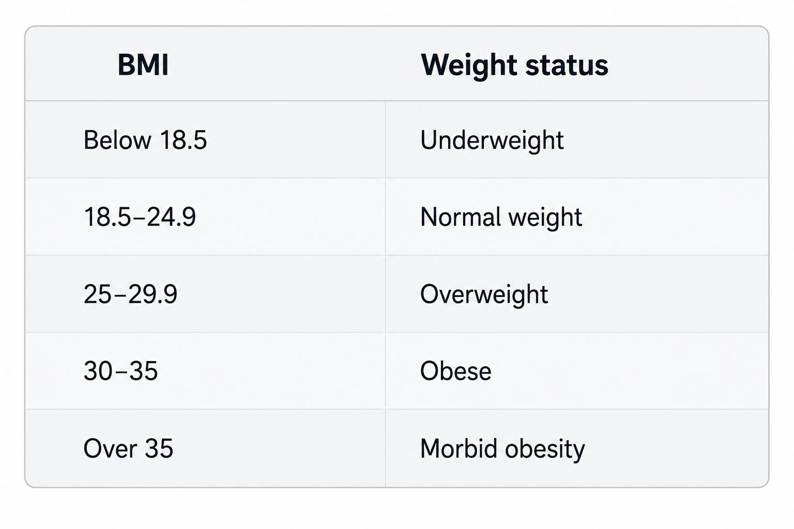

BMI Calculator
Body Mass Index
Healthy BMI range: 18.5 kg/m2 - 25 kg/m2
Your BMI is
-- --
Underweight
Normal
Overweight
Obesity
Body Mass Index
Healthy BMI range: 18.5 kg/m2 - 25 kg/m2
Underweight
Normal
Overweight
Obesity
Body Mass Index (BMI) is widely used as an indicator of body fat content. Your weight alone is not sufficient to establish if you are in a healthy weight range. For example, a tall but slender person can weigh more than a short but plump individual. But the former may enjoy better health as long as their weight is suitable for their height. The ideal weight is also likely to differ for men and women of similar heights.
How then do you know whether you fall in the healthy weight range or not? Your BMI solves this confusion. It correlates your weight with your height and evaluates whether your weight is appropriate for your stature. You can use a BMI calculator to find out your BMI.
Although not an exact measurement of body fat percentage, in most cases, BMI is a reliable tool for establishing risk levels for illnesses, especially ailments related to excess body fat. Many healthcare professionals use BMI to determine effective doses for medicines. Often people with a higher BMI need higher doses. Hence, it is crucial to be aware of your BMI to ensure your overall wellness.
Using a BMI calculator is a convenient way to determine your BMI score quickly. Below are some key reasons to use this tool:
You can gain valuable insights into your overall health status by understanding your BMI. The online BMI calculator takes into consideration your height and weight and offers a quick assessment of your overall health. It highlights potential health risks and areas where you can improve your holistic well-being. This helps you stay fit, active and healthy.
A BMI calculator becomes a valuable companion in helping you achieve your fitness goals. It allows you to gauge your physical progress accurately. By regularly checking your BMI, you can ensure that your fitness endeavours align with your specific goals.
A BMI calculator can be ideal for effective weight management. It assists you in setting realistic weight goals and a path towards a healthier weight. It helps you establish a suitable weight management strategy with achievable milestones over time.
You can gain valuable insights into your overall health status by understanding your BMI. The online BMI calculator takes into consideration your height and weight and offers a quick assessment of your overall health. It highlights potential health risks and areas where you can improve your holistic well-being. This helps you stay fit, active and healthy.
If you want to calculate your BMI, you have to find out your weight and height first. Once you know these values, you can arrive at the result by following the two steps mentioned below:
1 - Multiply your height by itself (height X height).
2 - Divide your weight by the answer you get in the first step.
For a 177 cm (1.77 m) individual weighing 75 kg,
BMI = 75 / (1.77 * 1.77) = 75/ 3.13 = 23.96
For a 160-pound, 5’8” (68”) individual weighing 75 kg,
BMI = (160/ 68*68) * 703 = (160/4624) * 703 = 24.3
You can also use an online BMI calculator to find out your BMI and eliminate human errors.
Click me here to know your

For adults over the age of 20 years, BMI values are grouped into the following weight status categories1:

The range remains the same for males and females. There is no separate BMI calculator for men and women.

In children, body fat content changes with age. It is also normal for teenage girls to have more body fat than boys. BMI calculation for children follows the sameformula as adults. But the value is then plotted on standard gender-specific BMI-for-age percentile charts for children. It determines the child's weight status compared to children of the same gender and age.
For example, a 25th percentile BMI for a 6-year old female child would indicate that the child's weight is higher than 25% of girls aged 6.
Click me here to know your
Due to the elevated stress of today's lifestyle and increased pollution levels, obesity and associated lifestyle diseases are rampant even among the youth. Thus, a BMI calculator in India is a useful tool as it can help you assess your health risks. A medical practitioner can help you understand your BMI's implications and guide you towards healthy life choices to prevent any complications.
However, apart from maintaining a healthy lifestyle, it is also crucial to stay prepared for unexpected health complications. Healthcare costs are skyrocketing, and the expenses for quality treatment can strain your financial resources. Fortunately, a health insurance policy can safeguard your savings by covering your healthcare expenses. Hence, along with adopting healthy habits, you can also consider investing in a comprehensive health insurance policy. This will secure your family against the financial repercussions of medical exigencies.